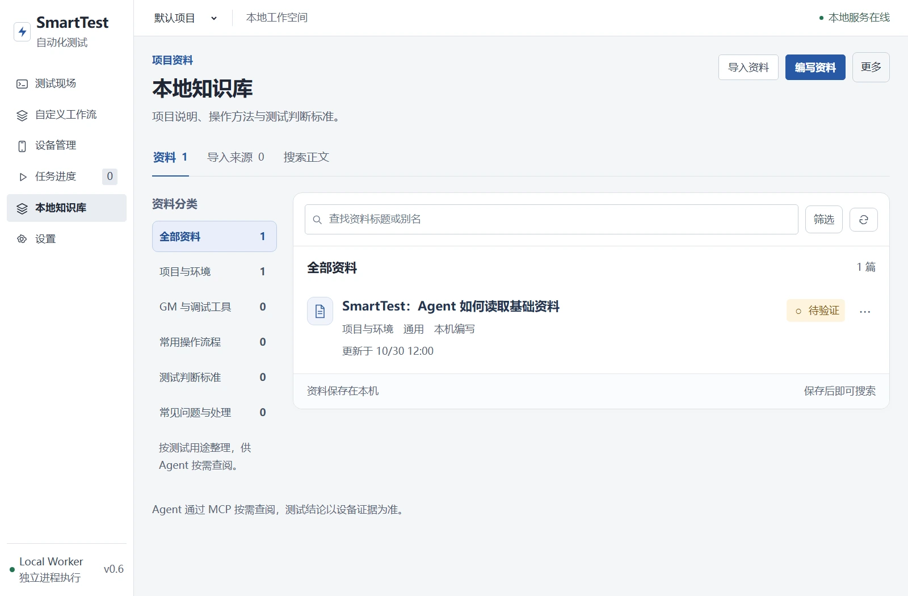

Agent 自动化测试框架 · 2026
SmartTest
SmartTest 是面向 Agent 的自动化测试框架。Agent 通过 MCP 操作真机，把已验证的步骤编排成可重复运行的工作流，也可以把视觉操作交给本地 GUI-Owl 1.5 4B。每次运行都能查到动作回执和验收结果。
 放大查看 ↗
放大查看 ↗Agent 怎样接手真机测试
以「打开游戏背包、找到时装、返回大厅」为例。外部 Agent 可以通过 MCP 申请一个独占设备会话，读取屏幕，决定下一步操作，再从新截图确认落点。它也可以一次提交目标、允许操作的应用和验收条件，让本地视觉模型逐步操作手机。
路线确定后，Agent 可以把设备操作和断言写成节点图，测试人员也可以在工作台画布上编排。同一份流程按版本保存。下一次换包做回归时，执行器沿已保存的连线重跑，用同一组条件验收。
动作有没有发到手机、游戏有没有达到目标，是两项单独记录的结果。即使点击已发送，若游戏只读接口没有观察到「时装」节点，背包检查仍无法通过。Agent 可以按任务 ID 取回失败步骤和截图，定位哪一步走偏。
 放大查看 ↗
放大查看 ↗本地视觉模型 GUI-Owl
框架内置 GUI-Owl 的调用接口，真机评测使用 GUI-Owl 1.5 4B Instruct 的 Q8_0 量化版本。模型权重单独安装，Ollama 在本机运行推理。外部 Agent 可以通过 run_local_model_test 委派视觉任务。固定工作流可独立运行。
Android 执行器通过 ADB 采集屏幕。模型读取当前画面、最多三张历史截图和最近的动作回执，每轮通过 mobile_use 提议一个动作，例如点击、滑动、输入、按返回键或等待。点击和滑动使用 0–1000 的归一化坐标，执行器再换算成设备像素。
动作发送前检查前台应用范围、只读约束和坐标，设备会话再次核对会话控制权和观察状态。等待只消耗时间。每次操作后重新观察，截图、观察 ID、模型动作及回执共同记录。
过程断言保留曾出现的目标证据，结束断言检查最后一帧的状态。模型报告完成时，已配置的独立断言必须全部通过才算成功。游戏状态无法读取时可以得到未能确认的结果。
 放大查看 ↗
放大查看 ↗背包测试失败复盘
这轮真机校准耗时 79.5 秒。模型做了 10 次决策，8 次触控送到手机。第 2 步点进商城，后续连续滑动也没回到背包。
第 10 步的滑动终点越界，执行器拦截了动作。最终只有「游戏仍在前台」通过，未观察到「时装」分类，也未回到大厅。
- 第 1 步尝试打开背包
- 第 2 步误入商城
- 第 10 步滑动越界被拦截
| 步骤 | 模型动作 | 执行情况 |
|---|---|---|
| 1 | 试图点击底栏的「背包」 | 已发送 |
| 2 | 点击「商场逛逛」 | 已发送，进入商城 |
| 3 | 等待页面加载 | 本地等待 2 秒 |
| 4–9 | 连续六次滑动分类栏 | 六次均已发送 |
| 10 | 滑动终点纵坐标为 1035 | 超出 0–1000 范围，拦截并结束任务 |
把测试步骤编排成回归用例
工作流有两类连线。执行线决定先做哪一步、在哪处分支。数据线把上一步的结果送到下一个节点。例如制品校验输出 VerifiedPackageRef，安装节点据此选择已校验的包。UI 定位输出 ElementRef，点击时还要检查这个控件引用对当前页面是否有效。
外部 Agent 先用 capabilities 读取支持的节点和参数，再用 validate_workflow 检查连线、端口类型和引用，校验通过后用 save_workflow 保存。更新已有流程需要提交当前修订号，避免覆盖别人的编辑。
回归时，run_saved_workflow 接收流程 ID、修订号和目标设备。独立工作进程执行当时的图，逐节点记录耗时、断言和产物。即使后来调整了画布，仍能查回此前那一轮实际执行的版本。
 放大查看 ↗
放大查看 ↗五轮冷启动回归
Android 游戏启动模板由 22 个业务节点组成，从取包校验、安装与资源准备、登录进大厅，走到冷启动、Trace 导出、解析和清理。
录制能力在取包前校验。能安装并进入大厅的构建也可能关闭 Unreal Insights，提前检查可以避免五轮都跑完才拿到无效产物。
在开启录制的构建上，五轮冷启动均重新满足大厅断言，共得到 5 份 Trace，解码 6,092,247 个事件，解码错误为 0。该轮验收覆盖本地 Trace 内容核验与清理。
| 阶段 | 实际检查 |
|---|---|
| 制品准备 | 确认构建开启 Unreal Insights，校验测试包 |
| 真机准备 | 安装、检查资源状态、登录并确认大厅 |
| 五轮采集 | 逐轮冷启动，恢复测试会话并重新断言大厅 |
| 本地验收 | 确认五份 Trace 可解析，核对下载及清理回执 |
真机评测结果
2026 年 10 月 30 日的六项游戏界面校准跨实现版本，每个目标单独运行一次。共 49 次决策、40 次动作发送，只有大厅满足当时配置的条件。
另一次基础手机评测中，三个目标各运行两次。设备信息查询和游戏启动状态各完整通过一次，设置搜索未通过，两批都属于小样本真机记录。
有阶段回执的校准样本中，观察、推理、独立校验和动作处理的中位数分别是 1.906、2.297、0.531 和 1.953 秒。各阶段样本数有差异，单个任务的总耗时见表。
| 目标 | 决策 / 发送 | 耗时 | 结束证据 |
|---|---|---|---|
| 大厅 | 2 / 0 | 16.2 秒 | 当前应用与大厅节点满足条件 |
| 背包 | 10 / 8 | 79.5 秒 | 目标分类未出现，滑动坐标越界 |
| 邮箱 | 14 / 13 | 85.9 秒 | 达到决策上限 |
| 活动 | 4 / 2 | 22.5 秒 | 操作被只读检查拦截 |
| 设置 | 11 / 9 | 123.8 秒 | 出现过设置页，推理连接失败 |
| 更多 | 8 / 8 | 134.1 秒 | 推理连接失败，未返回大厅 |
 放大查看 ↗
放大查看 ↗Agent 怎样读取测试证据
工作台、CLI 和 MCP 共用本地服务。Agent 通过 read_run_events 从上次的游标继续读事件，用 run_status 查节点回执、断言结果和设备清理状态，再用 read_artifact 按需取回截图或录屏。一次背包测试失败后，Agent 和工作台上的测试人员可以检查同一条运行记录。
知识库保存操作方法和判定标准。Agent 可以列出资料目录、通过 SQLite FTS5 按关键词检索，再按版本读取文档片段。用于固定流程的资料引用随运行一起保存，便于查回当时的判定依据。

放大查看 ↗